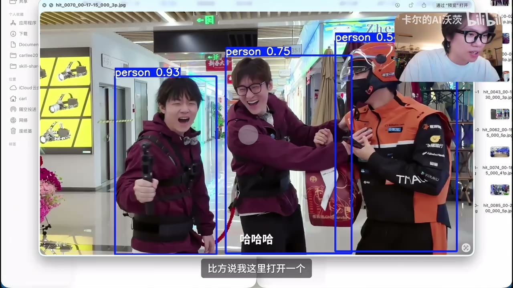

原视频 · 在线回看
点击后联网加载 B 站播放器；本地不下载整段视频。

原视频 · 在线回看
点击后联网加载 B 站播放器；本地不下载整段视频。
原标题：去了趟影视飓风分享了我的AI工作流！
UP 主：卡尔的AI沃茨
时长：35 分 30 秒
链接：https://www.bilibili.com/video/BV1boHx61Epz/
阅读强度：标准
一个可重复的任务，能否把经验记录下来，让智能体下次按同一套方法完成？这次分享从本地视频初剪入手，依次经历寻找现成 skill、整理自己的方法、组合多个 skill，以及批量运行。案例给出了具体的输入和结果，也展示了初剪识别不干净后如何修订。
在分享的用法里，agent 接收任务并安排步骤，模型参与理解和生成，skill 保存处理一类任务的说明及可能用到的脚本。MCP 等连接方式可以让工具访问外部服务；规则文件可以记录何时使用哪些流程。各产品的具体支持、权限和配置不同，需要按实际环境检查。
开场的 AI 新闻例子要求整理过去 24 小时值得关注的信息，按阅读偏好排序，写入飞书文档并列出来源。文档中的来源和筛选理由让读者能回头核对。它能节省整理步骤，但来源是否可靠、摘要是否准确，仍需检查原始材料。
假设一场躲猫猫拍摄有大量不同机位素材，人工逐段查找费时，上传所有视频又有成本。需求是先在本地找到值得看的候选片段。搜索从“本地视频”扩大到“视频”，再根据了解到的处理工具改搜 FFmpeg，得到一批候选 skill。
接着请 agent 比较候选说明：是否支持批量处理、是否包含视频索引和抽帧、怎样定位片段。下载量可以帮助发现候选，不能证明安全或适用；安装前还应核对来源、脚本、依赖与权限。agent 给出的比较也需要结合实际文件和小样本验证。
一次测试选取约 20 分钟视频：每 15 秒抽一帧，找出画面里至少三人的位置，剪出该时刻前后各 15 秒，集中保存。结果中有抽帧、命中截图、剪辑清单和片段；示例查看的一张截图框出了三个人。
这里“画面里有三人”只是筛选条件，不能保证他们正在追逐；每 15 秒抽样也可能错过短暂事件。所得材料适合交给剪辑者复查，单个命中案例不能证明整批素材都检索完整。清单和截图的重要作用是让人能找到对应时间并检查。
新的需求是把本地视频整理成可继续编辑的素材：识别静音、重复口播和无效片段，同时尽量保留主要信息。方案组合 FFmpeg、Whisper 生成的带时间文字，以及画面变化检测，形成候选剪辑决策表。可用工具与运行速度取决于电脑环境，实际费用和效果也要单独测量。
把方案整理成一个本地视频剪辑 skill，提供保守、平衡和激进模式，再用一段有反复重录和停顿的口播测试。演示中的原片为 176 秒，自动初剪后 95 秒，报告列出 24 段剪辑区间、原因和时间范围。
播放结果后，开头部分重复录制已被剪掉，较短停顿在平衡模式下有所保留；但多次重录的识别仍偏保守，语音段过长，结果不够干净。于是更新 skill 的处理逻辑。这个过程说明，报告和成片都要看：有表格可解释，并不代表每一处剪辑都符合创作意图。
分享给团队前，补充使用条件、输入文件路径、输出内容、模式参数、依赖和出错处理，并提供一个最小示例。有人只想处理静音，有人更关注重复口播，可以通过参数选择。不同电脑上还需重新确认依赖和结果，保留原始素材以便复查。
飞书案例提出一组连续任务：总结群聊过去 24 小时的信息，整理选题相关资料，准备会议和文档，并通知相关人员。执行过程中，智能体先整理文档，发送消息前出现确认；随后展示了日程、会议链接、任务清单及资料文档。
这里需要区分读取和写入：查看群聊与通讯录已经涉及信息访问；创建日程、发送消息会影响其他人。演示中出现一次发送确认，实际权限与确认行为取决于具体应用和配置，应核对收件人、内容及访问范围，不能由一次确认推断所有操作都已受到保护。
第三阶段以假设产品为例，先生成品牌长文，再整理出短广告语，例如“35 克，把 AI 带进日常”。设定中的重量和功能是创作输入，不能当作经过测量的真实产品参数。天平和羽毛成为贯穿视觉素材的表达。
接着根据文案生成多张海报和眼镜视图，选取画面组成短片分镜：黑色背景中出现天平、羽毛和问号，随后引出眼镜与标语。生成素材可帮助讨论方向，正式使用前仍需审阅文字、画面细节以及涉及的事实。
口播版本再加入透明背景的文字动画，用 FFmpeg 与原视频合成，并提出“文字不要遮挡人脸”的要求。最后把广告视频、海报与标语交给网页制作流程，展示首屏、视频和产品场景，并查看桌面与移动端截图。每一步的输出都成为下一步输入，重要的是交接时说清素材路径、要求和检查标准。
当流程逐渐稳定，可把触发条件、调用顺序与偏好写入适用的规则文件，供后续任务读取；新会话实际能否读取，取决于工具配置和作用范围。
最后一个例子收集 B 站和小红书相关内容及评论，整理用户对 agent 和 skill 的常见疑问，生成调研文档，并保存样本信息。演示报告耗时约 22 分钟；结果反映所选平台、时间和样本，不能代表所有用户，也需要核对采集范围、原始评论及平台规则。
定时任务可能遇到额度耗尽、网络中断或远程电脑重启。分享者使用另一个工具排查没有回复的服务，询问任务是否仍在运行。自动化越多，越需要知道输出在哪里、失败时如何发现、什么情况下需要人工介入。
从本地视频查找开始：定义画面条件，搜索并比较工具，用短片验证；再把剪辑规则、输入输出与依赖整理成可分享的 skill。多个 skill 可以沿文案、海报、视频和网页串联，稳定后再考虑批量与定时。
寻找视频工具 ；抽帧初剪 ；口播测试与修订 ；办公系统 ；品牌素材 ；批量调研与排障 。
每 15 秒抽一帧会漏掉什么？把你的流程分享给同事，需要写清哪些输入和依赖？自动生成的调研报告怎样回到原始证据？